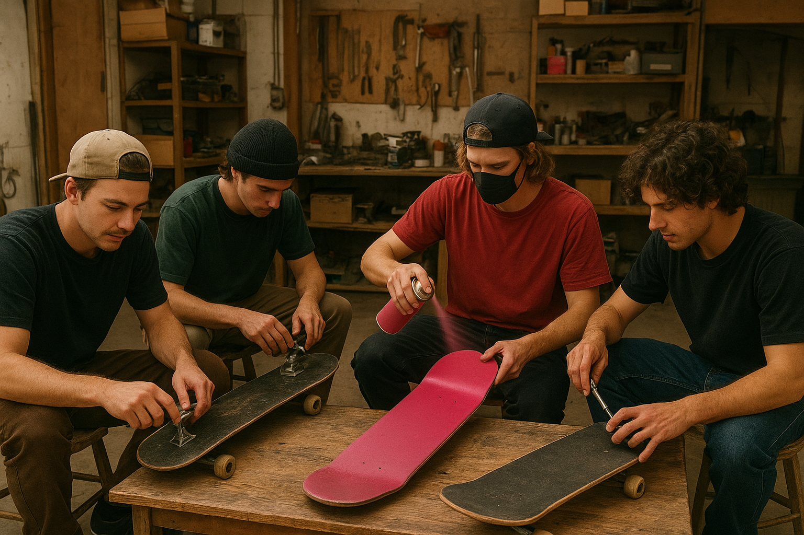
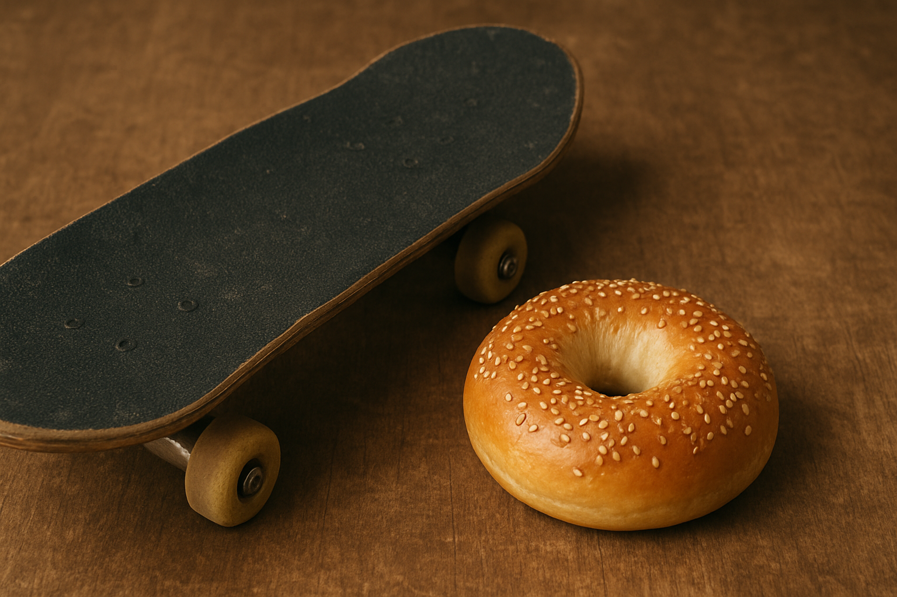

DIY Deck Art Workshop — Saturday
Every Saturday at Ollie’s Overnight, guests are invited to tap into their creative side at our DIY Deck Art Workshop.
This hands-on session provides blank decks, paint, stencils, and all the tools needed to design a one-of-a-kind skateboard masterpiece. Whether you’re crafting bold graphics, subtle patterns, or something completely experimental, our team is there to guide and inspire. It’s a relaxed, social atmosphere filled with music, conversation, and the satisfying smell of fresh paint—perfect for beginners and seasoned artists alike. Guests leave with a custom deck and a memorable piece of their stay.
Our staff will help you get kitted with a custom deck!
Bagels and Boards — Sunday
Sunday mornings begin with our signature Bagels and Boards meetup, where fresh bagels, spreads, fruit, and hot coffee pair perfectly with an easygoing skate session
Guests gather in the courtyard or skatepark to enjoy breakfast, share stories from the weekend, and warm up with relaxed laps and flat-ground tricks. It’s the ideal blend of community and calm—a laid-back way to ease into the day before checkout or more weekend adventures. Whether you’re rolling around or simply savoring your bagel in the morning sun, Bagels and Boards sets the perfect tone to wrap up your stay at Ollie’s Overnight.
Ask about our gluten-free options!